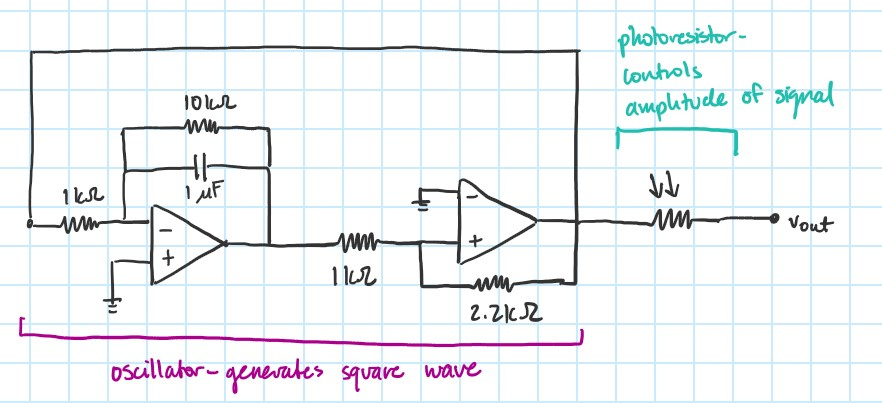

A Light-Based Theremin

A Light-Based Theremin
A theremin is a musical instrument played by simply moving your hands (see here). Traditional theremins function by having the user manipulate electromagnetic fields generated by two antennae. The ever-changing electromagnetic field is responsible for controlling two oscillators - one responsible for the frequency of the generated tone, and another responsible for the amplitude (volume) of the generated tone.
My theremin design doesn't rely on the user manipulating electromagnetic fields, but the amount of light that the circuit is exposed to. See the schematic below:
Schematic of my light-based theremin.
The circuit is comprised of two parts: an oscillator (square wave generator) and an amplifier used for volume gain. In the oscillator, the user is able to modify the frequency of the generated waveform by waving their hands over a feedback photoresistor in the Schmitt Trigger (Figure 1). Modifying the volume of the waveform is done in a similar manner: the user can do so by waving their hands over a photoresistor connected to the output of the oscillator (Figure 2).
Figure 1: Schematic of the Schmitt Trigger (frequency control)
Figure 2: Schematic of the oscillator and its volume control.
I also wanted the user to be able to control the volume of the oscillator with a physical knob. To do that, I hooked up the oscillator output to an additional amplifier, using a potentiometer as a feedback resistor (Figure 3).
Figure 3: Schematic of the master volume control.
Below is a video demonstration of the theremin. The output waveform is displayed on the monitor.
Below is an audio demonstration of the theremin. Unfortunately, a design flaw is that the op-amp used for the master volume control does not provide enough current to drive an 8 ohm loudspeaker. I have a few plans to fix this issue: use a transistor amplifier for master volume control instead, or implement a push-pull output stage to increase the load delivered by the amplifier.
The audio issue was fixed by connecting a voltage follower to the output of the master volume control. See below schematic. A video and audio demo of the updated design is also included.
Figure 4: Updated, final schematic of the light controlled theremin.